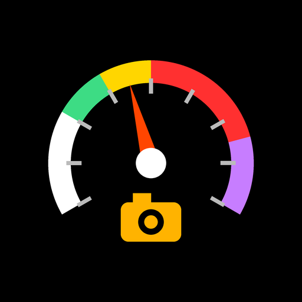

● Esperando GPS…
🔇 Tocá para el sonido
--:--
0-40
40-60
60-80
80-130
+130
0
km/h
📷 ¿Qué viste?
Ya quedó anotado el lugar
SALIENDO…Mantené el dedo apretado.
Soltá para no salir.
👆

InfoCam
Evitemos multas
entre todos
Avisa las cámaras que multan,
en toda la Argentina.
Esto es una simulación.
Así funciona InfoCam en tu celular,
en la ruta de verdad.
▶ TOCÁ PARA COMENZAR
Evitemos multas
entre todos
Avisa las cámaras que multan,
en toda la Argentina.
Instalala en tu celular:
neurus72.github.io/tablero
Esto fue una simulación.
En la ruta funciona igual, con el GPS del celular.